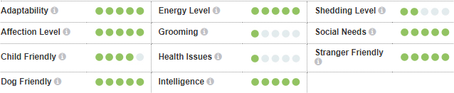

Сијамска мачка је средње велика раса мачака, дугог, гипког, грациозног и елегантног тела али мишићавог узгледа. Тело је уравнотежено и атлетски грађено, ноге витке, а шапе мале и овалне. Глава гледана фронтално подсец́а на троугао који се сужава у правим линијама до фине њушке. Уши су велике и избочене и постављене су тако да прате линије троугла. Очи су оријенталног облика и нагнуте према носу. Реп је дугачак, сужава се и не превија. Кратко, нежно и блиско лежец́е крзно има бледу боју, главна боја тела је светла са тамнијим интензивно обојеним ознакама. Обојене ознаке се протежу само на подручје маске лица, ушију, ногама и репу који су хладнији делови тела. Долази у широком спектру боја. Очи су интензивно плаве без обзира на боју и шаре крзна.
Кратка сјајна длака сијамске мачке не захтева претерану негу, али мачка ц́е уживати у пажњи коју добијају. Као и код вец́ине раса краткодлаких мачака она врло добро брине о својој длаци. Као и свим мачкама, и сијамским мачкама је потребна заштита од болести вакцинацијом, редовна контрола паразита и годишње ветеринарске здравствене провере.
Свака мачка је јединствена и свака има своја посебна свиђања, несвиђања и потребе када је храна у питању. Међутим, мачке су месоједи и свака мачка мора добити 41 специфичан хранљиви састојак из хране. Проценат ових хранљивих састојака варирац́е у зависности од старости, начина живота и целокупног здравља, па не чуди то што ће енергично маче захтевати другачији баланс хранљивих састојака у својој исхрани од мање активне, старије мачке. Поред тога, треба узети у обзир и храњење правилном количином хране за одржавање ‘идеалног телесног стања’ у складу са смерницама и прилагођавање индивидуалним преференцама у вези са мокрим или сувим рецептима.
Сијамска мачка је вероватно једнако позната по својој гласној вокалној способности као и по препознатљивом изгледу. Раса је обично дружељубива, екстровертирана и може да буде изузетно бучна. Сијамске мачке захтевају пажњу као И то да да буду део породице. Ово није идеална мачка за некога ко је по цео дан на послу јер не воли да буде препуштена сама себи! Сијамске мачке су врло интелигентне и треба их забављати. За забаву су им потребне играчке и гребалице, а могу се научити и да донесу играчке.
За симпатичан видео ове маце кликните овде